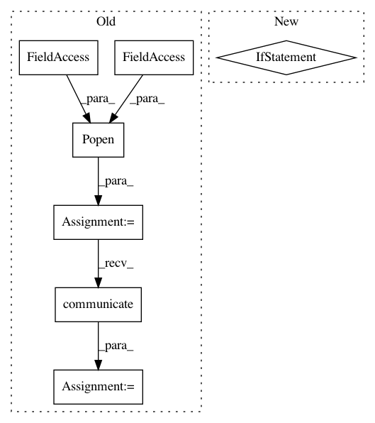

34df73c2d2d2a305efd438d7dcd9a01b3ed176f0,studio/tartifact_store.py,TartifactStore,put_artifact,#TartifactStore#Any#Any#Any#Any#,60
Before Change
if os.path.exists(cache_dir) and os.path.isdir(cache_dir):
shutil.rmtree(cache_dir)
pcp = subprocess.Popen(
["cp", "-pR", local_path, cache_dir],
stdout=subprocess.PIPE,
stderr=subprocess.STDOUT)
cpout, _ = pcp.communicate()
if pcp.returncode != 0:
self.logger.info(
"cp returned non-zero exit code. Output:")
self.logger.info(cpout)
After Change
if cache_dir != local_path:
debug_str = "Copying local path {} to cache {}" \
.format(local_path, cache_dir)
if ignore_arg != "":
debug_str += ", excluding files in {}" \
.format(ignore_filepath)
self.logger.debug(debug_str)
util.rsync_cp(local_path, cache_dir, ignore_arg,
self.logger)
In pattern: SUPERPATTERN
Frequency: 3
Non-data size: 7
Instances
Project Name: studioml/studio
Commit Name: 34df73c2d2d2a305efd438d7dcd9a01b3ed176f0
Time: 2017-09-08
Author: jason.liang@sentient.ai
File Name: studio/tartifact_store.py
Class Name: TartifactStore
Method Name: put_artifact
Project Name: studioml/studio
Commit Name: 1147d0a4c7a196b9a5aadb445542518df2f2fa02
Time: 2017-09-30
Author: peter.zhokhov@sentient.ai
File Name: studio/local_worker.py
Class Name:
Method Name: worker_loop
Project Name: vatlab/SoS
Commit Name: bc823da8c38eae03a311d0ba0627b23b84939b56
Time: 2017-07-30
Author: ben.bog@gmail.com
File Name: src/sos/actions.py
Class Name: SoS_ExecuteScript
Method Name: run